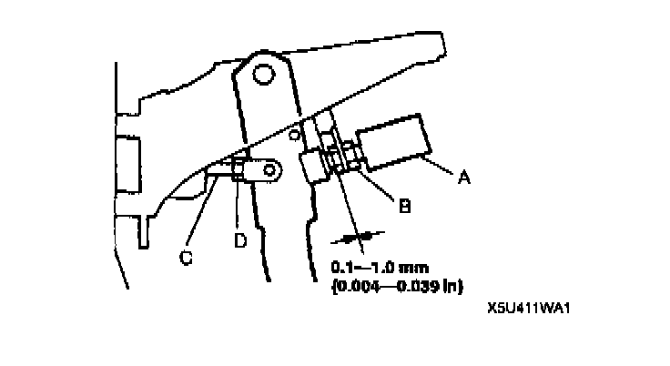
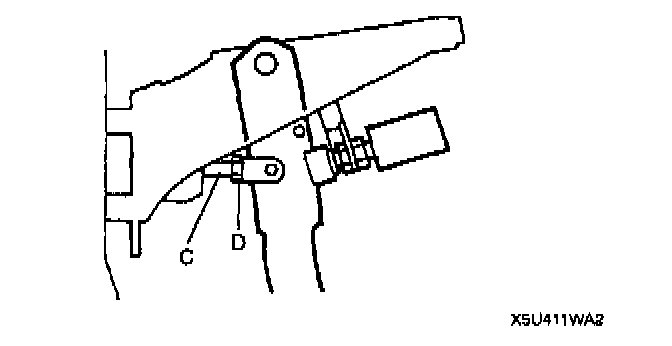

Brake Pedal Assy: Adjustments
BRAKE PEDAL HEIGHT ADJUSTMENT1. Disconnect the brake switch connector.
2. Loosen locknut B and turn switch A until it does not contact the pedal.
3. Loosen locknut D and turn rod C to adjust the height.

4. Tighten the bolt with locknut B so that clearance between the bolt for brake switch A and pedal stopper is within the specification.
Specification: 0.1-1.0 mm (0.004-0.039 inch)
Tightening torque: 14-17 Nm (140-180 kgf-cm, 122-156 inch lbs.)
5. Connect the brake switch connector.
6. After adjustment, inspect the pedal play and the brake light operation.
PEDAL PLAY ADJUSTMENT
1. Remove the snap pin and the clevis pin.

2. Loosen locknut D and turn rod C to align the holes in the fork and in the pedal.
3. Install the clevis pin and the snap pin.
4. Verify the pedal height and the brake light operation.
Tightening torque: 24-34 Nm (2.4-3.5 kgf-m, 17-25 ft. lbs.)